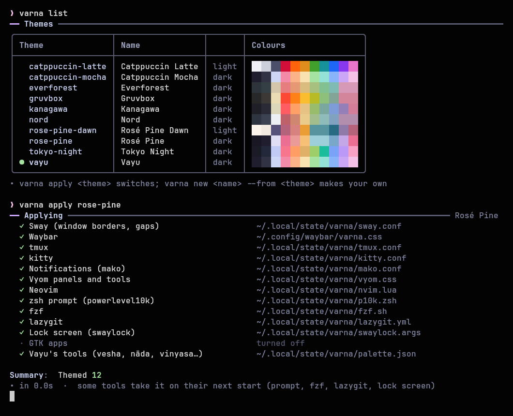

Varna (वर्ण) is Sanskrit for "colour".
A Linux desktop is a dozen programs, each with its own colour settings in its own format: hex codes in sway's config, CSS in waybar, #{} formats in tmux, a colour table in kitty, Lua in Neovim. Changing the look means editing all of them, and they drift apart. varna keeps one theme (a small TOML file of named colours) and writes each tool's colours from it, into a file the tool's config includes. Switch the theme and every tool changes within a second, reloaded in place.

#Features
- Twelve tools from one theme: sway (borders, gaps, corners), waybar, tmux (bar, borders, popups, copy mode), kitty, mako, Vyom panels, Neovim, powerlevel10k, fzf, lazygit, swaylock and GTK apps, plus a JSON palette any program can read.
- Live: every running tool reloads in place (sway, waybar, every tmux server, every kitty window, every Neovim through its socket, mako, Vyom).
- Your configs stay yours: each tool includes one generated file; nothing else in its config is touched, and without varna it keeps working on its own values.
- Per-tool themes:
varna tool nvim tokyo-nightgives one tool its own theme while the rest follow the desktop. - Ten themes to start: Vayu, Catppuccin Mocha and Latte, Rosé Pine and Dawn, Tokyo Night, Gruvbox, Nord, Kanagawa, Everforest; light/dark twins switch with
varna mode toggle. - Your own themes:
varna new "Rose Dusk" --from nord, then edit the colours (or use vinyasa's editor). - Any file:
varna template addthemes any config with{{accent}}-style placeholders. - Safe: a typo in a template is an error, never a silently broken colour; a throwaway
HOMEnever restyles the running desktop. - No dependencies beyond Python 3.11's standard library.
#Install
With kosha: kosha install varna.
Or the installer (clones into ~/.local/share/varna, links ~/.local/bin/varna, no root):
curl -fsSL https://raw.githubusercontent.com/Theyashsawarkar/varna/main/install.sh | bashOr by hand: git clone https://github.com/Theyashsawarkar/varna ~/.local/share/varna && ln -s ~/.local/share/varna/bin/varna ~/.local/bin/varna.
#Getting started
varna doctor # what each tool's config needs to include (one line each)
varna apply # write and reload every tool with the current theme (Vayu)
varna apply rose-pine # switch
varna set accent blue # keep the theme, change the accent
varna mode toggle # its light / dark twinvinyasa, Vayu's settings app, is a window over all of this: theme cards, accent swatches, a theme editor, and a per-tool page.

#Themes
| Theme | Variant | Accent |
|---|---|---|
vayu | dark | mauve, with rose borders: Vayu's own look |
catppuccin-mocha / catppuccin-latte | dark / light | mauve |
rose-pine / rose-pine-dawn | dark / light | iris |
tokyo-night | dark | blue |
gruvbox | dark | yellow |
nord | dark | frost |
kanagawa | dark | violet |
everforest | dark | green |
varna show <theme> prints its palette and roles as swatches.
#Commands
| Command | Does |
|---|---|
varna / varna status | The desktop's theme, accent and each tool's pick |
varna list | Every theme with its colours (--json) |
varna apply [theme] | Switch (or re-apply) and reload every tool (--only tmux,kitty, --no-reload) |
varna mode dark|light|toggle | The theme's light or dark twin |
varna set <setting> <value> | accent, gtk on|off, ui.opacity, ui.gaps, ui.radius, ui.border_width, ui.font, ui.mono, ui.size, ui.mono_size |
varna show [theme] [--tool t] | Palette and roles as swatches |
varna tool <tool> [theme|follow] | One tool's own theme |
varna tools | Every tool, its theme, and whether its config includes varna |
varna new <name> [--from theme] | A theme of your own |
varna edit <theme> | Open it in $EDITOR (a shipped theme is copied first) |
varna delete <theme> | Delete a theme of yours |
varna template add|remove|list | Theme any file |
varna palette [--tool t] | The resolved colours as JSON |
varna ensure | Write any missing file without reloading (run at login) |
varna doctor | Check every theme and every tool's hook |
Shorthand: varna nord = varna apply nord.
#Hooking up each tool
Each tool's config includes varna's file once. varna doctor checks every one and prints the line that's missing; put your current colours in the config before the include, and they become the fallback.
| Tool | Add to | Line |
|---|---|---|
| sway | ~/.config/sway/config, at the end | include ~/.local/state/varna/sway*.conf |
| waybar | ~/.config/waybar/style.css, at the top | @import "varna.css"; then use @accent, @base, alpha(@red, 0.4)... |
| tmux | ~/.config/tmux/tmux.conf, at the end | source-file -q ~/.local/state/varna/tmux.conf (formats can use #{@accent}, #{@ink}...) |
| kitty | ~/.config/kitty/kitty.conf, at the end | include ~/.local/state/varna/kitty.conf |
| mako | ~/.config/mako/config, before the first [section] | include=~/.local/state/varna/mako.conf |
| Vyom | ~/.config/vyom/config.toml, [vyom] | css = ["~/.local/state/varna/vyom.css"] |
| Neovim | lua/varna.lua | reads ~/.local/state/varna/nvim.lua into catppuccin's color_overrides (example) |
| powerlevel10k | ~/.zshrc, after ~/.p10k.zsh | source ~/.local/state/varna/p10k.zsh |
| fzf | ~/.zshrc | source ~/.local/state/varna/fzf.sh (sets FZF_DEFAULT_OPTS, and $VARNA_FZF_COLORS for scripts) |
| lazygit | ~/.zshrc | export LG_CONFIG_FILE="$HOME/.config/lazygit/config.yml,$HOME/.local/state/varna/lazygit.yml" |
| swaylock | your lock command | swaylock $(cat ~/.local/state/varna/swaylock.args) |
| GTK apps | nothing: varna set gtk on | links ~/.config/gtk-{3,4}.0/gtk.css (libadwaita's named colours) |
waybar and mako refuse to start when an included file is missing: run varna ensure before them at login.
#A tool with its own theme
varna tool nvim tokyo-night # Neovim alone uses Tokyo Night
varna tool nvim follow # back to the desktop's theme
varna tools # who uses what~/.config/varna/varna.toml (written by varna and vinyasa; edit freely):
theme = "rose-pine"
accent = "iris" # optional: a palette name or a hex
gtk = true
[ui]
gaps = 8
opacity = 0.9
[tools]
nvim = "tokyo-night"
kitty = { opacity = 0.95 } # or just tweak one value for one tool#Making a theme
varna new "Rose Dusk" --from vayu # ~/.config/varna/themes/rose-dusk.toml
varna edit rose-dusk
varna apply rose-dusk[meta]
name = "Rose Dusk"
variant = "dark" # "light" for a light theme
light = "rose-dawn" # optional: its twin, for `varna mode`
[palette] # these 26 names (Catppuccin's), all #rrggbb
crust = "#11111b" mantle = "#181825" base = "#1e1e2e" # ... text, red, green, blue, mauve ...
[roles] # optional: a palette name, another role, or a hex
accent = "mauve" # the active workspace, tmux session, selections
accent2 = "pink" # popup and pane borders
border = "accent" # the focused window
urgent = "red"
ink = "crust" # text on a coloured capsule
[ui] # optional
radius = 12
gaps = 4
[tools.tmux] # optional: extra colours one tool's template asks for
window_idle = "#9a9faa"Roles not set take their defaults (varna show lists them all).
#Theming any file
Any file can be a template: {{accent}} and friends are replaced on every apply.
varna template add ~/.config/foo/config.varna ~/.config/foo/config --tool foo| Write | Get |
|---|---|
{{accent}} | #cba6f7 |
{{accent:upper}} / {{accent:bare}} | #CBA6F7 / cba6f7 |
{{base:a=0.35}} | #1e1e2e59 (with alpha) |
{{red:rgb}} / {{red:rgba=0.4}} | 243, 139, 168 / rgba(243, 139, 168, 0.4) |
{{red:alpha=0.4}} | alpha(#f38ba8, 0.4) (GTK CSS) |
{{peach:mix=base:0.3}} | peach blended 30 % toward base |
{{window_idle|overlay1}} | a fallback when the theme lacks a name |
{{gaps}}, {{font}}, {{theme_name}} | ui values and the theme's name |
?swayfx corner_radius 12 | the line only on SwayFX |
An unknown name is an error, so a typo never ships a broken colour.
#For tool authors
~/.local/state/varna/palette.json has the desktop's colours, roles and ui values, and a tools table with each tool's own pick. Read it at start, and watch its modification time to recolour live:
import json, os
p = os.path.expanduser("~/.local/state/varna/palette.json")
try:
data = json.load(open(p))
colors = data.get("tools", {}).get("mytool", data)["colors"] # my own pick, else the desktop's
except (OSError, ValueError, KeyError):
colors = {} # no varna: keep my defaults
accent = colors.get("accent", "#cba6f7")#Troubleshooting
- A tool didn't change:
varna toolsshows whether its config includes varna;varna doctorprints the line to add. - waybar or mako won't start: their included file is missing;
varna ensure. - The prompt, fzf, lazygit or lock screen didn't change: they take it on their next start (a new shell, the next lock).
- GTK apps keep their old look:
varna set gtk on; apps that ignoregtk.cssstill get the dark/light signal.
#Contributing
New themes, tool templates and fixes are welcome: see CONTRIBUTING.md. Design decisions are in docs/adr.
#License
MIT. The shipped themes' palettes are from their projects (credited in each file), all MIT or Apache-2.0.